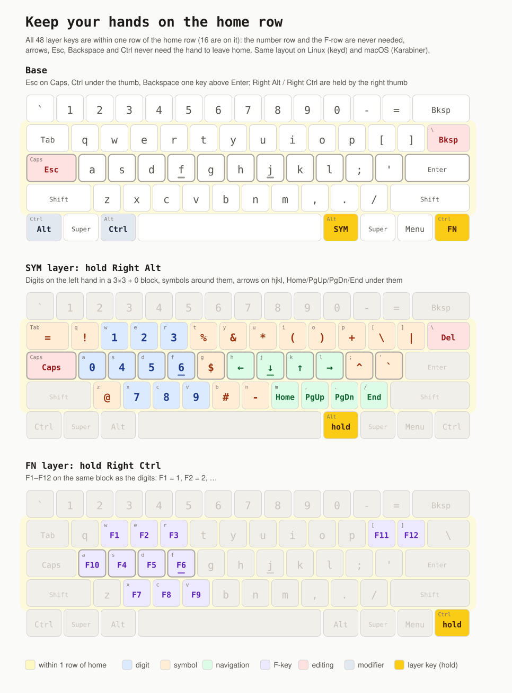

dotfiles/ Dotfiles ↗
App configs, the colour themes and the theme command. The user manual is MANUAL.md.
- themes
- alacritty
- bash
- doom emacs
- nvim
- vscode
- firefox
- obsidian
- zathura
- lf
- hledger
- claude
- thefuck
My whole computer in one repo. Linux on dwm, macOS on AeroSpace, and one theme command that recolours every app from a single palette file.
Each theme is one NAME.conf palette in dotfiles/themes, with a wallpaper from assets. theme NAME applies it live to dwm, dmenu, st, alacritty, firefox, dunst, obsidian, rmpc, vscode, emacs, claude code, neovim, fcitx5, zathura, slock, the cursor and the wallpaper. Pick a card to see the full palette. This page switches to that theme too.
Each part is its own repo, pulled in here as a git submodule. Commit and push inside the submodule first, then bump it here.
App configs, the colour themes and the theme command. The user manual is MANUAL.md.
The window-manager layer for each OS. On Linux: suckless tools as submodules, X11 startup, notifications, fonts and a cursor generator. On macOS: a tiling WM and hotkeys.
One home-row layout on every machine: keyd on Linux, Karabiner on macOS. See the drawing.
Rime input schemes for fcitx5: 小鹤双拼 with 形码 auxiliary codes. Typing history and build output are git-ignored.
A public Obsidian vault template for a research and startup pipeline, from inbox and sources to experiments, writing and finance.
Ties the modules together. bootstrap.sh installs everything from lists in packages/ (apt, Brewfile, tools, /opt apps), builds what has no package (builds/) and links configs (links.txt). Every installed app is listed in SOFTWARE.md.
Small tools on $PATH: bar blocks, dmenu helpers, font switchers, and the build scripts for things Ubuntu doesn't package.
Pixel fonts for the everyday look, hand-drawn ones for the soft look: font-preset pixel or font-preset bubble switches Latin and Chinese together in every app. All of them are in the assets repo with their licences, and bootstrap.sh fonts installs them.
Home-row modifiers and layers, the same on Linux (keyd) and macOS (Karabiner). Drawn by keymap/draw.py.

Every step can be run on its own and run again safely. ./bootstrap.sh --help lists them.
$ git clone --recursive git@github.com:AnissL93/personal-infra.git ~/System/personal-infra $ cd ~/System/personal-infra $ ./bootstrap.sh --dry-run # look first $ ./bootstrap.sh
# after a plain clone $ git submodule update --init --recursive # change a module: push it first, then bump it here $ git add dotfiles && git commit -m "Bump dotfiles"